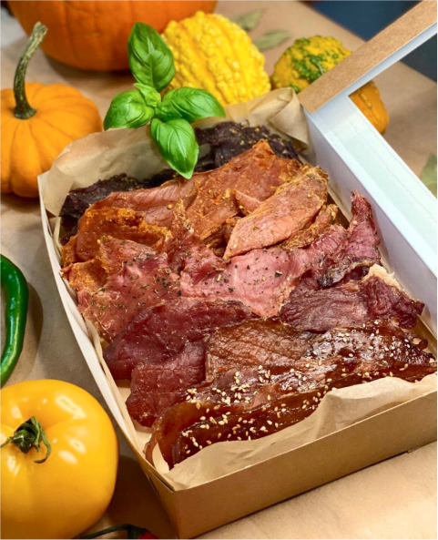
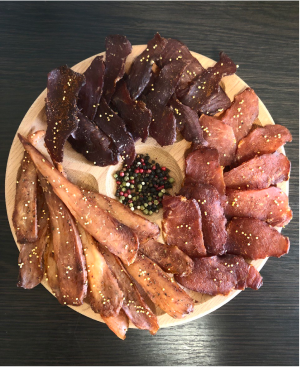

Вітаємо Вас, ми команда однодумців яка прагне зробити свою працю смачною) але ми із задоволенням поділимся з Вами. Наша мета зібрати в себе найкращі сорти крафтового пива, сидру, вина, найкращі м'ясні вироби, найкращі лимонади, найкращі мякі та тверді сири, також інші цікаві снекові закуски, але виключно українського виробництва, з кожного куточка нашої країни, від людей, які працюють з душею, а також на економічний приріст нашої держави.
Ми робимо різноманітні смакові сети, пропонуючи нашим гостям гастрономічний подорож по Україні.


Що у нас є
Крафтове пиво — це життя, це постійні експерименти та пошуки кращого смаку.
Пиво виготовлене пивоваром вручну, та як наслідок — в невеликих об’ємах. Крафт — це постійний квест та пошук. Здавна все пиво виготовляли вручну. Майже у кожному місті був свій бровар. Кожен з них варив власний сорт пива. Смак відрізнявся, бо рецепти різні, вода різна та й солод, хміль у кожного свої, місцеві. Ми намагаємося зібрати їх для вас, на відстані одного кліку.
Не меншої уваги ніж пиво, заслуговують і м’ясні делікатеси.
мГоловна привабливість сиров’яленого м'яса – це концентрований м’ясний смак, надзвичайний запах і особливо міцна фактура, яка дозволяє нарізати м’ясо дуже тонкими скибками, переводить її із допоміжної категорії «закуска» в розряд «делікатесу», який перетворює її в смаковий центр цілого ряду страв. Щоб отримати гастрономічне задоволення, стати гурманом і естетом. Варто це спробувати.
Чому саме ми
Ми втілили все найкраще в одному закладі та здивуємо WOW новинками, які будуть тільки у нас!.. Ми впевнені, що тут будуть об`єднуватися поціновувачі пива і не тільки,адже ми пропонуємо значну кількість сортів на розлив, більше 30 видів. Також ви знайдете улюблені напої у скляних пляшках чи жестяних банках. Щоб ви завжди змогли взяти улюблений напій в будь-яку подорож.
А для поціновувачів смачних закусок, будемо знаходити шляхи, щоб здивувати українськими м’ясними та сирними делікатесами, які нічим не поступаються славнозвісним італійським чи іспанським.
У нас ви зможете відпочити від напруженого робочого дня чи тижня. Швидко, за допомогою кількох кліків, а головне якісно та естетично засервірувати стіл різними нарізками, на будь який смак. Ми створимо для вас сети з різними смаколиками та напоями, під вашу компанію та ваші смакові вподобання. А наші служби доставки кулею помчать до вас або ж привезуть на визначений день та час!